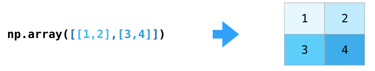

01-numpy简单入门
numpy入门¶
什么是numpy¶
numpy：number python，一个重要的python语言数学运算库，在数据分析，机器学习，科学运算，图像处理等方面有重要的作用。numpy让向量和矩阵的运算变得非常简单。
创建numpy数组¶
numpy的数组不同于普通的list数组，numpy的数组可以轻松的扩展到多个维度。在numpy中数组的名字叫ndarray（n个dimension的array）
1 | |
1 2 3 | |
1 2 3 4 5 | |
创建1-6的数组
1 | |
创建-2到1间隔为0.5的数组, 前开后闭
1 | |
把0-2的空间分割成5份，包含5
1 | |
二维0数组和1数组
1 2 | |
numpy对角单位矩阵
1 | |
numpy斜对角矩阵
1 2 | |
numpy数组的属性¶
d的维度
1 | |
d的形状
1 | |
d的元素个数
1 | |
d的数据类型
1 | |
numpy进阶¶
numpy数组的运算¶

-
加
-
减 乘 除
- numpy数组乘以常量
- 平方
data ** 2
- 三角函数
np.sin(data)
- 指数函数
np.exp(b)
- 开平方
np.sqrt(a)
- 布尔过滤
a = np.array([20,30,40,50])
a <= 35
numpy数组和list比较¶
1 2 3 4 5 6 7 | |
numpy数组的索引¶
numpy数组的元素操作¶
numpy二维数组¶

1 | |
numpy数组运算¶
numpy数组切片索引¶
numpy数据转置¶
numpy数据变形¶
1 2 3 4 5 | |
numpy高维数据¶

1 2 | |
numpy数据维度应用场景¶
计算机如何表示图像
- 黑白照片
- 彩色照片